Nuestros Productos
Panadería
-
Pan
Delicioso pan recién horneado, con una amplia variedad de opciones, desde pan blanco clásico hasta panes especiales con semillas y cereales.
$2.50
-

Pan dulce
El pan de dulce se distingue por qué es un postre, por su elaboración y presentación final de otros panes.
$3.00
-
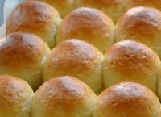
Pan de leche
El pan de leche es un estilo de pan con notas dulces y una miga super suave y aireada.
$3.00
-
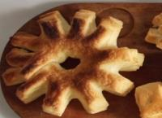
Cremona
La cremona es un pan que se destaca por su forma y por su hojaldre. Es especial para la merienda, pero puede consumirse en cualquier momento del día.
$3.00
-
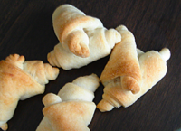
Cuernitos
Los cuernitos con un clásico en la panadería argentina. Son unos bizcochos de sabor bastante neutro a forma de cuerno. Especiales para el desayuno o merienda.
$3.00
-
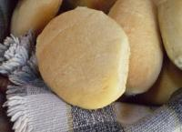
Figacitas
Las figazas de manteca son uno de los panes más comunes en Argentina.
$3.00
-
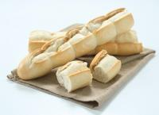
Mignon
El pan mignon es unos de los más comunes en la Argentina, es un pan con características similares a la baguette, la diferencia es que son más pequeños, cada unidad pesa 40 gramos.
$3.00
-
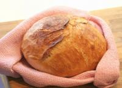
Pan de Campo
El pan es un alimento básico que forma parte de la dieta tradicional a nivel mundial. Se suele preparar mediante el horneado de una masa, elaborada con harina, levadura, sal y agua.
$3.00
-
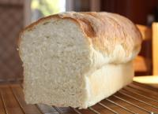
Pan de Molde
El pan de molde es rico para hacerlo tostado y acompañarlo con mermeladas, manteca, dulce de leche o quesos untables.
$3.00
-
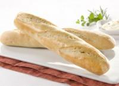
Flautita
El pan flautita, es un pan con características similares a la baguette, la diferencia es que son más pequeños, cada unidad pesa 100 grs.
$3.00
-
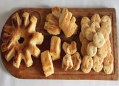
Bizcochitos de Grasa
Tradicionales en la gastronomía argentina, suelen consumirse solos o bien acompañandos de unos ricos mates.
$3.00

Confitería
-

Medialunas de Grasa
La medialuna de grasa es una de las facturas más tradicionales de la argentina. Se caracteriza por su sabor neutro pero con leves notas saladas.
$1.75 - $3.50
-

Medialunas de manteca
Las medialunas de manteca, más que tradicionales y clásicas entre las facturas argentinas. Se consumen en el desayuno o merienda, solas o rellenas con jamón cocido y queso. Muy recomendable es acompañarlas con un rico café con leche y sumergir la medialuna en la infusión antes de comerla.
$1.50 - $4.75
-

Bolas de Fraile Rellenas
La bola de fraile o Berlinesa son riquísimas facturas fritas, presentan una miga esponjosa a las cual no se puede resistir. Se venden solas o bien rellenas con crema pastelera o dulce de leche.
$1.50 - $4.75
-

Bolas de Fraile sin Relleno
La bola de fraile, berlinesa o bomboloni en Italia, son una riquísima factura frita, con una miga súper esponjosa a la cual no se puede resistir.
$1.50 - $4.75
-
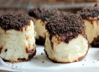
Tortitas Negras
LLas tortitas negras con una deliciosa variante de las facturas argentinas. Realizadas con una sabrosa masa esponjosa y una capa de azúcar negra en la superficie.
$1.50 - $4.75
-
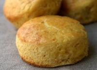
Scons Clasicos
Los scons clásicos son bocaditos con un sabor neutro, presentan azúcar entre sus ingredientes, pero no son muy dulces, por eso es que se usa acompañarlos con mermeladas o dulces.
$1.50 - $4.75
-
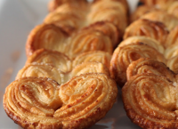
Palmeritas de Hojaldre
Las palmeritas son un clásico de la panadería argentina. Están hechas con una masa hojaldrada, luego se les da su forma tradicional y se las cubre con una capa de azúcar.
$1.50 - $4.75
-
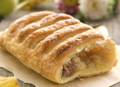
Strudel de Manzana
El strudel de manzanas es una receta típica austríaca y del sur de Alemania. Es un postre compuesto por un relleno a base de manzanas cubierto con una fina y crocante masa similar al hojaldre.
$1.50 - $4.75
Pastelería Dulce
-
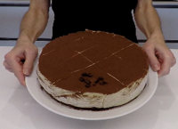
Torta Mousse de Cafe
Riquísima receta para deleitar a cualquiera. Torta con una esponjosa y húmeda base de bizcochuelo de chocolate recubierta con una exquisita mousse de café.
$4.50 - $6.00
-
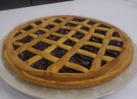
Crostana Italiana
Hoy les presento una receta muy usada en Italia, la clásica crostata.
$4.50 - $6.00
-
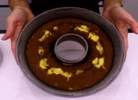
Budin Marmolado Crema y Chocolate
Otra versión de esta famosa receta de budín marmolado. Hoy con el ingrediente estrella...la crema de leche
$4.50 - $6.00
-
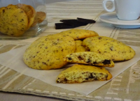
Cookies con Chips
Receta fácil, económica, rápida y deliciosa. Las cookies con chips son galletitas de un sabor increíble. Muy gustosas tanto para grandes como para chicos.
$4.50 - $6.00
-
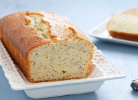
Budin con Amapolas
Receta rica, liviana y fácil. Budín de limón con semillas de amapola. Ideal para los desayunos livianos y saludables!
$4.50 - $6.00
-
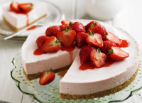
Cheesecake de Frutilla
El cheesecakes de frutilla que presento, es una torta rápida y más desestructurada respecto al cheesecake original.
$4.50 - $6.00